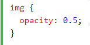
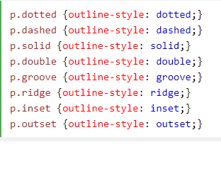
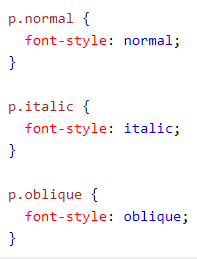

The <span> tag is used to group inline-elements in a document. The <span> tag provides no visual change by itself. The <span> tag provides a way to add a hook to a part of a text or a part of a document.
The <code> tag is a phrase tag. It defines a piece of computer code.
Bildes necaurlaidība ir izmainīta uz 0.5
šim tekstam ir svītrota robeža
Ar otro komandu, teksta fonta stils ir izmainīts uz italics
